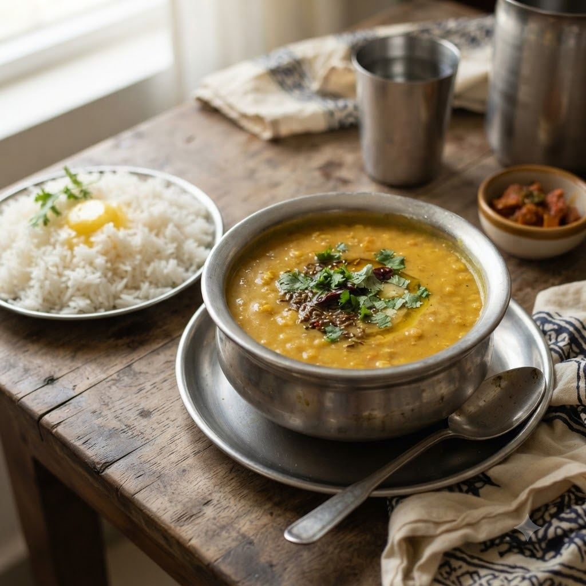

Everyday Toor Dal (Simple Daily Dal)

Everyday Toor Dal (Simple Daily Dal)
Chef Magic – Sauté + Boil Auto 22 min — Serves 4
Gluten-Free • High-Protein • Vegetarian • Everyday
🧑🍳 Chef Magic🍽 Serves 4
Ingredients
- 1 cup toor dal, washed
- 3 cups water
- 1/2 tsp turmeric (haldi)
- 1 tsp cumin seeds (jeera)
- 1 dried red chilli (lal mirch)
- 1 tbsp ghee
- Salt to taste
- Chopped coriander (dhania)
Method
1Add dal, water, turmeric and salt to the jar; select Boil (Speed 1–2, 100°C) and cook until fully soft.
2Add ghee, cumin seeds and dried red chilli directly into the cooked dal; select Sauté (Speed 2–4, ~130–160°C) for 2 minutes to temper.
3Stir well and garnish with coriander before serving.